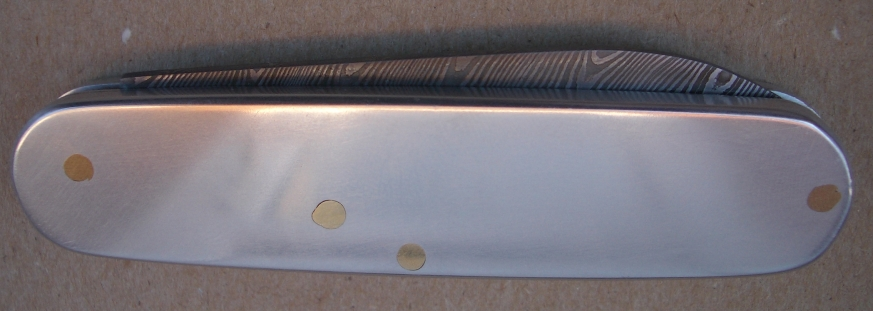
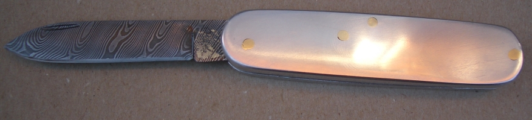
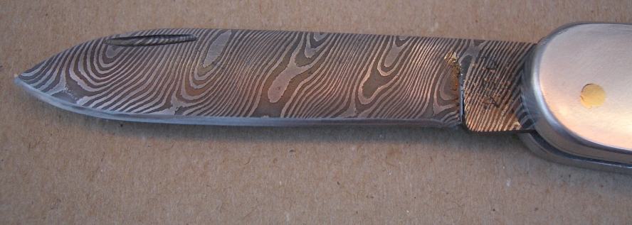

A Modified Swiss Army Knife
December 2006
To make this knife I bought a cheap Swiss Army knife. I took it apart and used the inner sides and spring. I made a 72 layer 1/2 inch square bar of 15n20 and CS70, and twisted it, then made it into a replica of the original blade.
The sides are aluminum alloy that my father had in his garage, and the rivits are 2.5mm brass rod. I shortened the blade and handle, because the original was longer than 3 inches and consequently not legal to be carried every day.
 